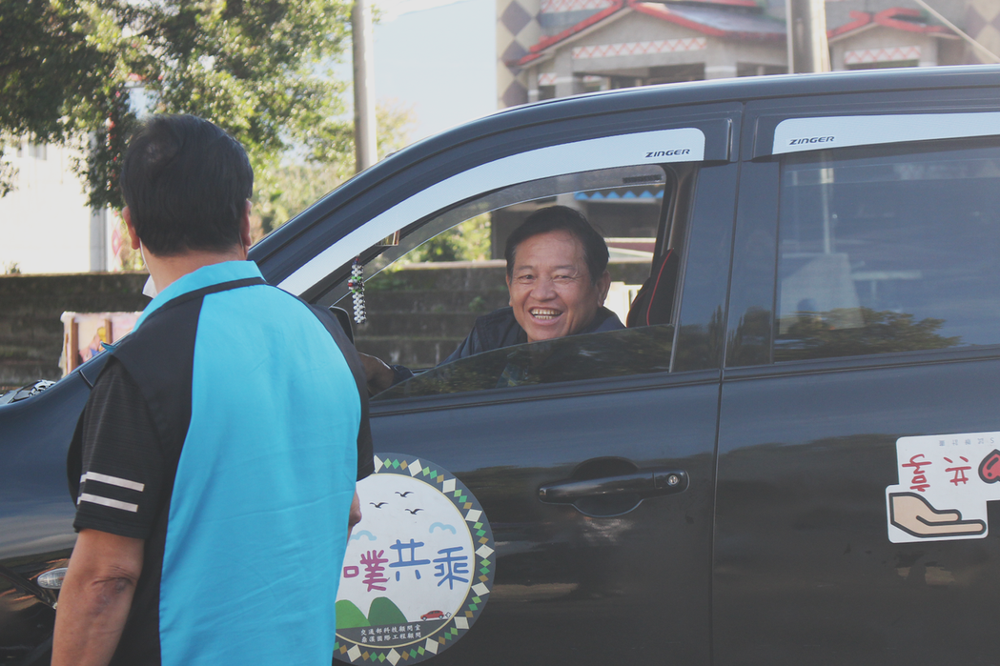
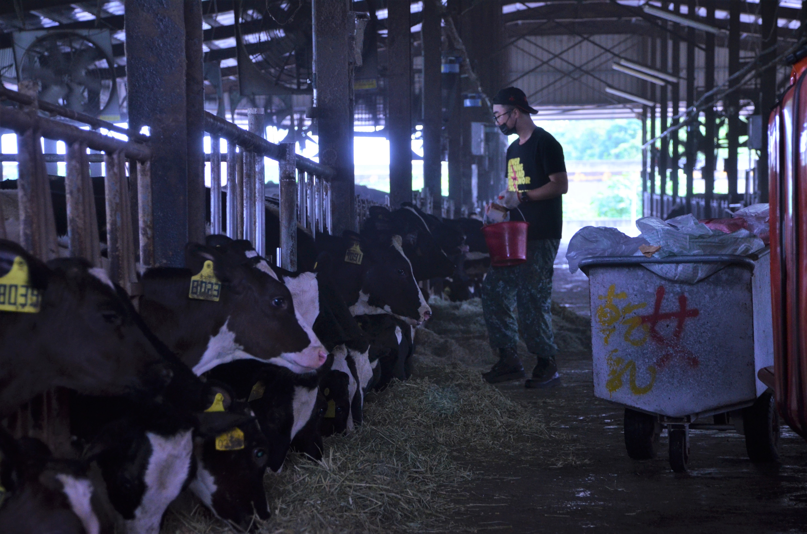
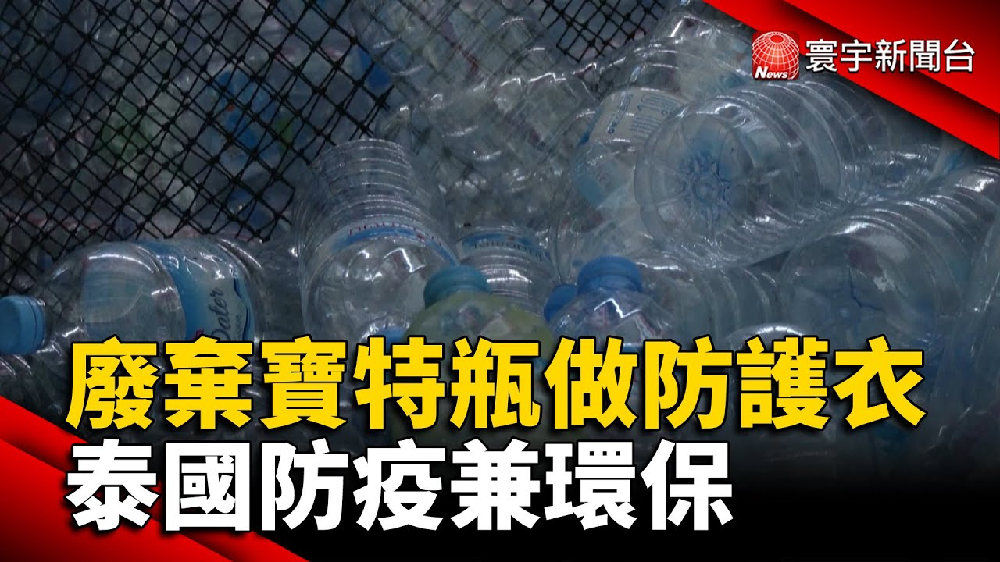
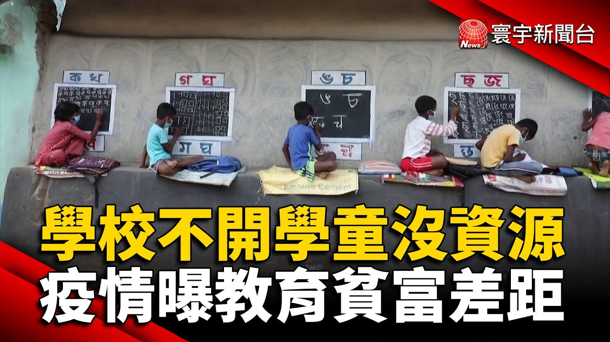
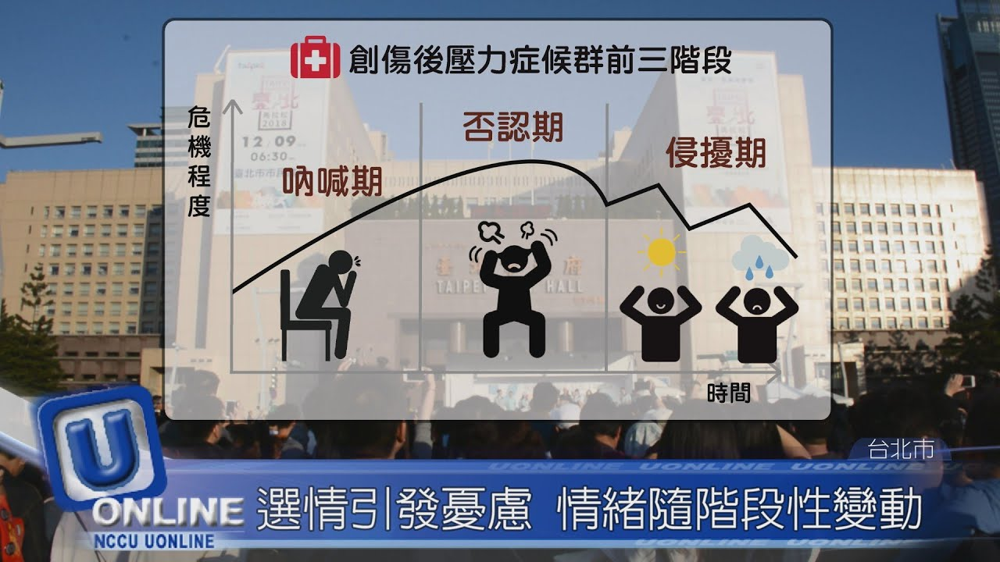
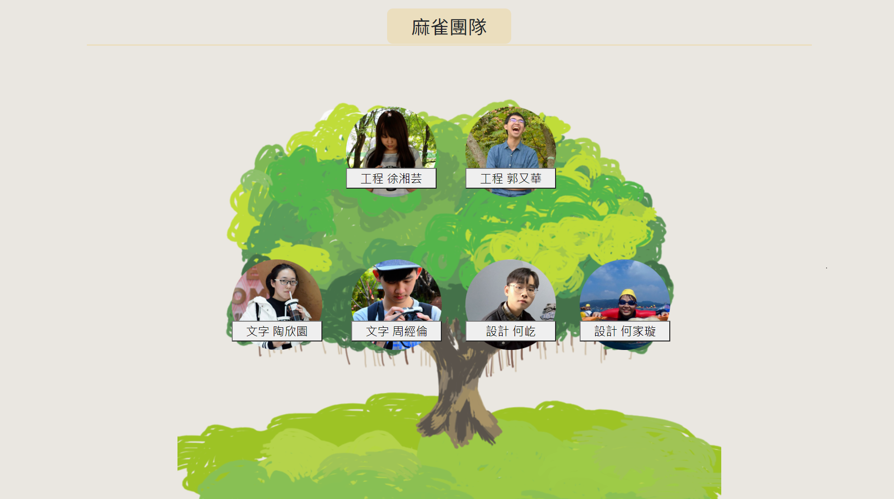

長篇文字專題  噗噗共乘來了： 偏鄉交通資源如何整合？ 榮獲全球華文永續報導獎社會價值獎，透過審視偏鄉交通方案「噗噗共乘」的營運，帶出偏鄉交通資源急需整合的現象。 黃牛解密： 娛樂市場下的必然 哄抬價格的黑手 透過訪問黃牛、購票民眾及經濟學者，探討演唱會等門票黃牛，在台灣猖獗卻無法可管也無法遏止的現象及原因。  小農鮮乳崛起： 探索市場新規則 台灣鮮乳市場近年出現主打「小農鮮乳」的眾多獨立品牌，打破大廠長期壟斷的生態。透過訪問小農鮮乳的經營者及上下游業者，勾勒出台灣鮮乳市場的新輪廓。 不只是「後製」： 台灣配音界幕後揭密 透過訪問台灣各年齡層的配音員，及二次元創作相關業者，敘述台灣配音業界僵硬的現象，並初步探討原因及解方。本文獲刊於關鍵評論網。 資料新聞 歐美亞疫情單元： 用數據圖表看全球每日疫情 利用每日確診數等數據，敘述疫情趨勢，並提供歐美亞各國疫情相關新聞。 颱風不來 五月的水庫不豐 利用爬蟲結果，分析颱風季降雨情形與水庫個月儲水量的關係，並呈現出颱風與水庫乾旱之間的相對關係。 含圖表的影音新聞  廢棄寶特瓶做防護衣 泰國防疫兼環保 透過畫面設計呈現塑膠再生流程，也盤點再生防護衣對於環保助益的數據。  學校不開學童沒資源 疫情曝教育貧富差距 利用受教時印度鄉村學童的討喜光景，對比落後國家在疫情下的受教遭阻礙的數據，凸顯疫情下，教育資源更難以抵達偏鄉的窘境。  緩解選後負面情緒 街頭擁抱傳遞溫暖 2018大選綁公投，造成不少人出現「選舉症候群」。以年情族群的反應和排解的方式，佐以健康知識，希望帶給觀眾一點走出憂鬱的能量。 網頁作品  「麻雀雖小」新聞網頁 新聞網頁架設的練習作品，以提供老年人新聞來源為出發點，製作架構簡單的新聞網頁。主要前端工程由我擔任，主要利用HTML及CSS技術，並為了滿足設計的需求，上網自學了些微Java的編碼。